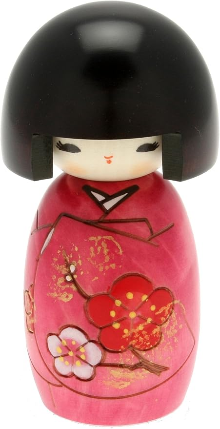

A handcrafted wooden kokeshi doll in a vivid kimono pattern, made by a respected Japanese artisan.

Kokeshi dolls trace back to the Edo period, each one turned and painted by hand.
Small variations in the hand-painting make every piece quietly one of a kind.
At around 5 inches tall, it fits neatly on a shelf, desk, or tea table.
Kokeshi dolls were traditionally carved by woodworkers in Japan's hot spring regions as simple toys and souvenirs.
Today they are prized as folk art collectibles, each one showing the artisan's individual hand.
A small pop of color and craft among books.
A meaningful gift for anyone drawn to Japanese culture.
A classic first piece for a growing kokeshi collection.
It's a display collectible, not intended as a children's toy.
Hand-painted pieces can have small natural variations from the photos.
It's solid wood, but should be displayed rather than handled roughly.
A handcrafted kokeshi doll with a vivid kimono pattern - see current pricing and availability on Amazon.
Check Price on Amazon →